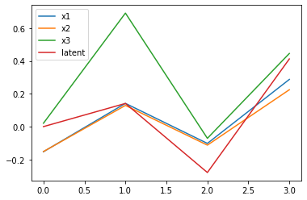
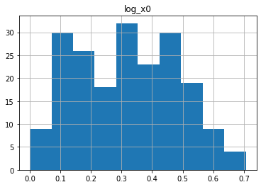

torch.manual_seed(277); # set seed for reproducibility of examplesData Preparation
Fake data generation and artificial gaps for GPFA
Data generator
generate some fake data in order to test the imputation
What is does is: - take a function to generate the “true” latent - use some random coefficient to generate all the N features - add some random noise
class GPFADataGenerator:
def __init__(self,
n_features: int,
n_obs: int,
latent_func = lambda x: torch.sin(3*x), # Functions used to generate the true latent
noise_std = .2,
Lambda = None
):
self.n_features, self.n_obs = n_features, n_obs
self.time = torch.arange(0, self.n_obs, dtype=torch.float)
self.latent = latent_func(self.time)
self.Lambda = torch.tensor(Lambda).reshape(n_features, 1) if Lambda is not None else torch.rand(n_features, 1)
self.exact_X = (self.Lambda * self.latent).T
self.X = self.exact_X + torch.normal(0., noise_std, size = (n_obs, n_features))
self.data = pd.DataFrame(self.X.numpy(), columns = [f"x{i}" for i in range(self.n_features)])GPFADataGenerator
GPFADataGenerator (n_features:int, n_obs:int, latent_func=<function <lambda>>, noise_std=0.2, Lambda=None)
Initialize self. See help(type(self)) for accurate signature.
| Type | Default | Details | |
|---|---|---|---|
| n_features | int | ||
| n_obs | int | ||
| latent_func | function | Functions used to generate the true latent | |
| noise_std | float | 0.2 | |
| Lambda | NoneType | None |
fdg = GPFADataGenerator(3, 4)fd_plot = pd.DataFrame(fdg.X.numpy(), columns = ["x1", "x2", "x3"])
fd_plot["latent"] = pd.Series(fdg.latent.numpy())fd_plot.plot()<AxesSubplot: >
Missing Data
class MeteoDataTest:
"Utility class to keep track of dataset, missing data and export to right format"
def __init__(self, data: pd.DataFrame):
" Init with provided dataset"
self.data = data.copy()
self.data_complete = self.data.copy()
self.n_features, self.n_obs = data.shape[1], data.shape[0]
self.time = torch.arange(0, self.n_obs, dtype=torch.float)
@classmethod
def generate_gpfa(cls, *args, **kwargs):
generator = GPFADataGenerator(*args, **kwargs)
self = MeteoDataTest(generator.data)
self.generator = generator
return selfMeteoDataTest
MeteoDataTest (data:pandas.core.frame.DataFrame)
Utility class to keep track of dataset, missing data and export to right format
Missing Data
generate artificial gaps in the data
Missing at Random
@patch()
def add_random_missing(self: MeteoDataTest,
prob_miss_row: float = .2, # Probability an entire row is missing
prob_miss_value: float = .1 # Probability a single observation is missing
):
"""Make some row and same values randomly missing """
# keep the original data
self.is_miss_row = torch.rand(self.n_obs) <= prob_miss_row
self.data[self.is_miss_row.numpy()] = np.nan
self.is_miss_value = (torch.rand(self.n_obs * self.n_features) <= prob_miss_value).reshape(-1, self.n_features)
self.data[self.is_miss_value.numpy()] = np.nan
return selfMeteoDataTest.add_random_missing
MeteoDataTest.add_random_missing (prob_miss_row:float=0.2, prob_miss_value:float=0.1)
Make some row and same values randomly missing
| Type | Default | Details | |
|---|---|---|---|
| prob_miss_row | float | 0.2 | Probability an entire row is missing |
| prob_miss_value | float | 0.1 | Probability a single observation is missing |
fd = MeteoDataTest.generate_gpfa(3, 4)fd.add_random_missing().data| x0 | x1 | x2 | |
|---|---|---|---|
| 0 | -0.001938 | -0.127557 | NaN |
| 1 | NaN | NaN | NaN |
| 2 | 0.137062 | 0.151774 | -0.092625 |
| 3 | NaN | NaN | NaN |
MeteoDataTest.generate_gpfa(2, 10).add_random_missing(prob_miss_value = .7, prob_miss_row=.0).data| x0 | x1 | |
|---|---|---|
| 0 | -0.203655 | -0.117674 |
| 1 | NaN | NaN |
| 2 | NaN | -0.111792 |
| 3 | NaN | NaN |
| 4 | NaN | NaN |
| 5 | NaN | 0.112875 |
| 6 | NaN | NaN |
| 7 | NaN | NaN |
| 8 | NaN | NaN |
| 9 | NaN | 0.409263 |
Continous gap
The missing data is all clustered around a gap
parameteres: - gap length - variable for gap
def _make_random_gap(
gap_length: int, # The length of the gap
total_length: int, # The total number of observations
gap_start: int = None # Optional start of gap
): # (total_length) array of bools to indicicate if the data is missing or not
"Add a continous gap of ginve length at random position"
if(gap_length >= total_length):
return np.repeat(True, total_length)
gap_start = np.random.randint(total_length - gap_length) if gap_start is None else gap_start
return np.hstack([
np.repeat(False, gap_start),
np.repeat(True, gap_length),
np.repeat(False, total_length - (gap_length + gap_start))
])_make_random_gap(3, 10)array([False, False, False, False, False, True, True, True, False,
False])test_eq(_make_random_gap(3, 10).sum(), 3) # correct gap length@patch
def add_gap(self: MeteoDataTest,
gap_length:int, # length of gap
variables: Collection[str], # variables that should be affected by the gap
gap_start: int = None # Optional start of the gap
):
self.is_gap = _make_random_gap(gap_length, self.data.shape[0], gap_start)
self.data.loc[self.is_gap, variables] = np.nan
return selfMeteoDataTest.add_gap
MeteoDataTest.add_gap (gap_length:int, variables:Collection[str], gap_start:int=None)
| Type | Default | Details | |
|---|---|---|---|
| gap_length | int | length of gap | |
| variables | Collection | variables that should be affected by the gap | |
| gap_start | int | None | Optional start of the gap |
MeteoDataTest.generate_gpfa(5, 10).add_gap(4, ["x1", "x2"]).data| x0 | x1 | x2 | x3 | x4 | |
|---|---|---|---|---|---|
| 0 | 0.147414 | -0.162167 | 0.534020 | -0.314157 | -0.145421 |
| 1 | 0.227970 | -0.250645 | -0.280364 | 0.298646 | 0.023241 |
| 2 | -0.277233 | NaN | NaN | 0.011927 | 0.350378 |
| 3 | 0.081553 | NaN | NaN | 0.091917 | 0.162622 |
| 4 | -0.488591 | NaN | NaN | -0.383358 | -0.142712 |
| 5 | 0.850323 | NaN | NaN | 0.378259 | -0.198052 |
| 6 | -0.554473 | -0.438560 | -0.345700 | -0.368945 | -0.081258 |
| 7 | 0.904893 | 0.390038 | 0.473491 | 0.916413 | -0.053904 |
| 8 | -0.463149 | -0.567804 | -0.318116 | -0.687993 | 0.118367 |
| 9 | 0.931138 | 0.398865 | 0.561607 | 0.701557 | 0.026598 |
Save as DataFrame
@patch
def tidy_df(self: MeteoDataTest,
complete = False, # full dataset (False) or the one with missing data (True)
is_missing = False # add flag whether value is missing
):
df = self.data if not complete else self.data_complete # no need to copy here because next lines does a copy anyway
df = df.assign(time = self.time.numpy())
df = df.melt("time")
if is_missing: df = df.assign(is_missing = self.data.melt().value.isna()) #missing data is not from complete data
return dfMeteoDataTest.tidy_df
MeteoDataTest.tidy_df (complete=False, is_missing=False)
| Type | Default | Details | |
|---|---|---|---|
| complete | bool | False | full dataset (False) or the one with missing data (True) |
| is_missing | bool | False | add flag whether value is missing |
fd.tidy_df()| time | variable | value | |
|---|---|---|---|
| 0 | 0.0 | x0 | -0.001938 |
| 1 | 1.0 | x0 | NaN |
| 2 | 2.0 | x0 | 0.137062 |
| 3 | 3.0 | x0 | NaN |
| 4 | 0.0 | x1 | -0.127557 |
| 5 | 1.0 | x1 | NaN |
| 6 | 2.0 | x1 | 0.151774 |
| 7 | 3.0 | x1 | NaN |
| 8 | 0.0 | x2 | NaN |
| 9 | 1.0 | x2 | NaN |
| 10 | 2.0 | x2 | -0.092625 |
| 11 | 3.0 | x2 | NaN |
fd.tidy_df(complete=True)| time | variable | value | |
|---|---|---|---|
| 0 | 0.0 | x0 | -0.001938 |
| 1 | 1.0 | x0 | 0.021966 |
| 2 | 2.0 | x0 | 0.137062 |
| 3 | 3.0 | x0 | 0.031551 |
| 4 | 0.0 | x1 | -0.127557 |
| 5 | 1.0 | x1 | 0.295225 |
| 6 | 2.0 | x1 | 0.151774 |
| 7 | 3.0 | x1 | 0.116207 |
| 8 | 0.0 | x2 | 0.139568 |
| 9 | 1.0 | x2 | 0.029323 |
| 10 | 2.0 | x2 | -0.092625 |
| 11 | 3.0 | x2 | 0.160619 |
fd.tidy_df(complete=False, is_missing=True)| time | variable | value | is_missing | |
|---|---|---|---|---|
| 0 | 0.0 | x0 | -0.001938 | False |
| 1 | 1.0 | x0 | NaN | True |
| 2 | 2.0 | x0 | 0.137062 | False |
| 3 | 3.0 | x0 | NaN | True |
| 4 | 0.0 | x1 | -0.127557 | False |
| 5 | 1.0 | x1 | NaN | True |
| 6 | 2.0 | x1 | 0.151774 | False |
| 7 | 3.0 | x1 | NaN | True |
| 8 | 0.0 | x2 | NaN | True |
| 9 | 1.0 | x2 | NaN | True |
| 10 | 2.0 | x2 | -0.092625 | False |
| 11 | 3.0 | x2 | NaN | True |
The export as a dataframe is working correctly with the missing data
fd_df = fd.tidy_df()alt.Chart(fd_df).mark_line(point=True).encode(
x = "time",
y = "value",
color = "variable"
)/home/simone/.local/lib/python3.10/site-packages/altair/utils/core.py:317: FutureWarning: iteritems is deprecated and will be removed in a future version. Use .items instead.
for col_name, dtype in df.dtypes.iteritems():fd.data| x0 | x1 | x2 | |
|---|---|---|---|
| 0 | -0.001938 | -0.127557 | NaN |
| 1 | NaN | NaN | NaN |
| 2 | 0.137062 | 0.151774 | -0.092625 |
| 3 | NaN | NaN | NaN |
MeteoDataTest.data_compl_tidy
MeteoDataTest.data_compl_tidy ()
fd.data_compl_tidy| time | variable | value | is_missing | |
|---|---|---|---|---|
| 0 | 0.0 | x0 | -0.001938 | False |
| 1 | 1.0 | x0 | 0.021966 | True |
| 2 | 2.0 | x0 | 0.137062 | False |
| 3 | 3.0 | x0 | 0.031551 | True |
| 4 | 0.0 | x1 | -0.127557 | False |
| 5 | 1.0 | x1 | 0.295225 | True |
| 6 | 2.0 | x1 | 0.151774 | False |
| 7 | 3.0 | x1 | 0.116207 | True |
| 8 | 0.0 | x2 | 0.139568 | True |
| 9 | 1.0 | x2 | 0.029323 | True |
| 10 | 2.0 | x2 | -0.092625 | False |
| 11 | 3.0 | x2 | 0.160619 | True |
Standard Scaler
The different variables in the can have pretty different values so we standardize so they are more comparable. Have numbers between 0 and 1 should also help with the computation accuracy.
One additional complexity is the need to backtransform not only the mean but also the standard deviation.
So we need a but of math
\[x_{norm} = \frac{x - \mu_x}{\sigma_x}\] then \[x = x_{norm}\sigma_x + \mu_x \]
using properties of Guassian distributions 1
\[p(x_{norm}) = \mathcal{N}(\mu_{norm}, \sigma^2_{norm})\]
\[p(x) = \mathcal{N}(\sigma_x\mu_{norm} + \mu_x, \sigma^2_x \sigma^2_{norm})\]
StandardScaler
StandardScaler (x:torch.Tensor)
Init normalizer by storing mean and std dev
| Type | Details | |
|---|---|---|
| x | Tensor | up to 2D Tensor |
x = torch.randn(20).reshape(-1,2)
norm = StandardScaler(x)
test_close(x, norm.inverse_transform(norm.transform(x)))
test_close(x.std(axis=0), norm.inverse_transform_std(norm.transform(x).std(axis=0)))nx = x.clone()
nx[3] = torch.nan
StandardScaler(nx).transform(nx)tensor([[ 1.0434, -0.7018],
[-0.3413, -0.2264],
[ 0.7216, -0.9768],
[ nan, nan],
[ 0.3866, 0.1091],
[-1.5779, 0.1705],
[ 0.1036, -1.2577],
[-1.6543, 1.3312],
[ 0.7548, 1.7514],
[ 0.5635, -0.1993]])Log transform
MeteoDataTest.log_transform
MeteoDataTest.log_transform (vars:Union[str,Collection[str]])
Tranform the given var with log(x+1)
| Type | Details | |
|---|---|---|
| vars | Union | list of variables names to log-transform |
| Returns | MeteoDataTest |
MeteoDataTest.generate_gpfa(3, 4).log_transform(['x1']).data| x0 | x2 | log_x1 | |
|---|---|---|---|
| 0 | -0.209523 | 0.137226 | 0.221309 |
| 1 | 0.308402 | 0.304317 | 0.229732 |
| 2 | -0.079178 | -0.082795 | -0.302681 |
| 3 | 0.218236 | 0.400733 | 0.326986 |
orig_data = MeteoDataTest.generate_gpfa(1, 200)
orig_data.data = np.abs(orig_data.data)
data = orig_data.log_transform(['x0'])data.data.hist()array([[<AxesSubplot: title={'center': 'log_x0'}>]], dtype=object)
Export
Footnotes
https://cs.nyu.edu/~roweis/notes/gaussid.pdf eq. 4a↩︎